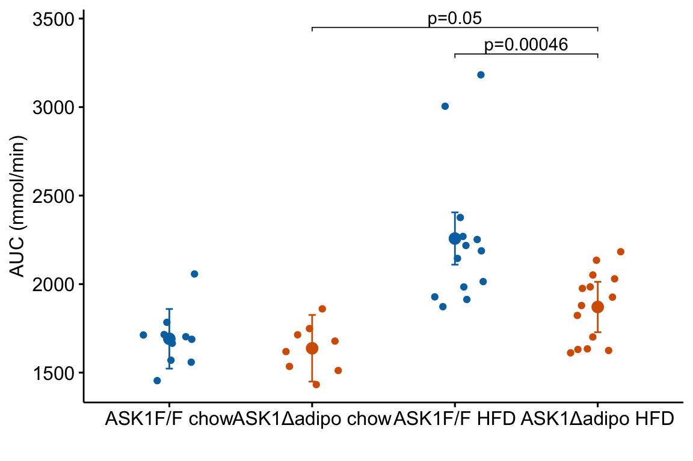

Chapter 4 Plotting Models
So, along the lines of Sarah Susanka’s “Not So Big House,” Kolbert asks the group, “What would a Pretty Good House look like?” – Michael Maines2
Plots should be the focus of both the reader and researcher. Instead of mindless plotting, a researcher should ask a series of questions of every plot
- What is the point of each element in a plot?
- Are these the points that I most want to communicate?
- Are there better practices for communicating these points?
- Are the points that I want to communicate that are not covered by these elements?
The answer to these questions should inform what is and what is not plotted. The result is a pretty good plot. The idea of a pretty good plot is borrowed from the “pretty good house” concept that grew out of a collaborative group of builders and architects in Northern New England. The “pretty good house” combines best practices for building an earth friendly, high performance home at a reasonable cost. There is no pretty good house governing body that awards certificates of achievement but, instead, a set of metrics and a collection of building practices that can achieve these.
A typical pretty good plot contains some combination of
- Modeled effects with confidence intervals. “Effects” are the coefficients of a model, or contrasts constructed from the model, such as pairwise differences between the means of the levels of a factor. Inferences are typically made from the estimated effects
- Modeled means and standard errors or confidence intervals.
- Raw data points or a summary distribution of these.
4.1 Pretty good plots show the model and the data
The data to introduce best practices in plotting come from Figure 2d and Figure 2e from “ASK1 inhibits browning of white adipose tissue in obesity”, introduced in the introductor chapter (Analyzing experimental data with a linear model)
4.1.1 Pretty good plot component 1: Modeled effects plot

Biologists infer the biological consequences of a treatment by interpreting the magnitude and sign of treatment “effects”, such as the differences in means among treatment levels. Why then do we mostly plot treatment level means, where effect magnitude and sign can only be inferred indirectly, by mentally computing differences in means? A pretty good plot directly communicates treatment effects and the uncertainty in the estimates of these effects using an effects plot.
Figure ?? is an effects plot of the linear model fit to the glucose tolerance data. The effects plot is “flipped”. The y-axis is the categorical variable – it contains the labels identifying the pair of groups in the contrast and the direction of the difference. In addition to the pairwise comparisons, I include the interaction effect on the y-axis. The x-axis is the continuous variable – it contains the simple effects, which is the difference in means between the two groups identified by the y-axis labels. Additionally, the y-axis includes the estimate of the \(diet \time genotype\) interaction effect. The bars are 95% confidence intervals of the effects (either simple effects or interaction effect), which is the range of values that are compatible with the observed data at the 95% level.
We can use the effects and CIs of the effects to evaluate the treatment effects. For example, when on a high fat diet (HFD), the mean, post-baseline plasma glucose level in the ASK1\(\Delta\)adipo is 3.5 mmol/L less than that for the control (ASK1F/F). Differences less than 5.3 mmol/L less than ASK1F/F levels or greater than 1.7 mmol/L less than ASK1F/F levels are not very compatible with the data. It is up to the research community to decide if 1.7 mmol/L or 3.5 mmol/L differences are physiologically meaningful effects.
4.1.2 Pretty good plot component 2: Modeled mean and CI plot
Figure 4.1: Response plot
The response plot in Figure 4.1 “shows the model” – by this I mean the plot shows the modeled means, represented by the large circles, the modeled 95% confidence intervals of each mean, represented by the error bars, and the model-adjusted individual response values, represented by the small colored dots. What do I mean by modeled means, modeled error intervals, and model-adjusted responses?
| ask1 | diet | N | Sample mean | Sample sigma | Sample SE | Model mean | Model sigma | Model SE |
|---|---|---|---|---|---|---|---|---|
| ASK1F/F | chow | 10 | 14.35 | 1.48 | 0.47 | 14.35 | 1.85 | 0.59 |
| ASK1F/F | HFD | 13 | 19.40 | 3.60 | 1.00 | 18.63 | 1.85 | 0.52 |
| ASK1Δadipo | chow | 8 | 13.87 | 1.26 | 0.44 | 14.01 | 1.85 | 0.66 |
| ASK1Δadipo | HFD | 14 | 15.92 | 1.73 | 0.46 | 15.53 | 1.85 | 0.49 |
- The modeled means and error intervals are estimated from the statistical model. Many published plots show the sample means and sample error intervals, which are computed within each group independently of the data in the other groups and are not adjusted for any covariates or for any hierarchical structure to the data.
- A modeled mean will often be equal to the raw mean, but this will not always be the case. Here, the modeled means for the non-reference groups in Figure ?? do not equal the sample means because the modeled means are adjusted for the baseline measures of glucose (Table ??) (specifically, the modeled means are conditional on the baseline being equal to the mean of the baseline in the reference group).
- For most of the analyses in this text, modeled error intervals are not the same as the sample error intervals and are commonly conspicuously different. For the glucose tolerance data, the modeled error intervals are calculated from a pooled estimate of \(\sigma\) while the sample error intervals are estimated from sample-specific estimates of \(\sigma\) (Table ??).
- Model-adjusted responses are responses that are adjusted for covariates in the model. If there are no covariates in the model, the model-adjusted responses are the same as the raw response. In the glucose tolerance data, the model-adjusted responses are the modeled, individual response measures if all individuals had the same baseline glucose (the covariate).
Modeled means, error intervals, and responses are not commonly plotted but it is these values that are consistent with our inferences from the statistical model. There are many data sets in experimental biology where a plot of sample means, error intervals, and responses give a very distorted view of inference from the model.
The response plot in Figure 4.1 also “shows the data” by plotting response values as “jittered” dots. Showing the data
- allows the reader to get a sense of the underlying sample size and distribution including outliers, which can be used to mentally model check the published statistical analysis. Adding a box plot, violin plot, or dot plot augments the communication of the distributions if there are enough data to justify the addition.
- allows a reader to see the overlap in individual responses among groups and to evaluate the biological consequences of this overlap.
4.1.3 Combining Effects and Modeled mean and CI plots – an Effects and response plot.
Figure 4.2: Effect of diet and ASK1 deletion on post-baseline glucose. Top: effects plot of 2 X 2 simple effects (difference in means) and of the diet X genotype interaction. Bars are 95% confidence intervals of the effects. Unadjusted p-values from the linear model are given. Bottom: response plot of the means and 95% confidence interval of each diet X genotype combination.
Combining the effects and response plots into a single plot is an easy solution to issues that arise if only one or the other is used. What are these issues?
While a response plot like that in Figure 4.1 is standard in biology, it fails to show the effects, and the uncertainty in the effects, explicitly. To infer the effects from the plot, a reader must perform mental math – either compute the difference or the ratio between pairs of means. This mental math is easy enough if the comparisons are between individual treatment levels but much harder if the comparisons are between pooled sets of treatment levels, for example in a factorial experimental design. The mental math that is excessively difficult is the reconstruction of some kind of error interval of the contrasts, for example the 95% confidence intervals in Figure ?? and it is these intervals that are necessary for a researcher to infer the range of biological consequences that are compatible with the experiment’s results. The inclusion of the p-values for all pairwise comparisons in a response plot gives the significance level of these contrasts, but of the kinds of summary results that we could present (contrasts, error intervals, p-values), the p-values are the least informative.
Effects plots are very uncommon in most of biology outside of meta-analysis and clinical medicine more generally. An effects plot alone fails to communicate anything about the sample size or conditional distribution of the data. Equally important, response values are often meaningful and researchers working in the field should be familiar with usual and unusual values. This can be useful for interpreting biological consequences of treatment effects but also for researchers and readers to asses the credibility of the data (for example, I have twice, once in my own data and once in a colleagues data, found mistakes in the measurement of an entire data set of response variable because the plotted values weren’t credible).
4.2 Some comments on plot components
- Several recent criticisms of bar plots have advocated box plots or violin plots as alternatives. Box plots and violin plots are useful alternatives to jittered dots if there are sufficient data to capture the distribution but I wouldn’t advocate replacing the plot of modeled means and confidence intervals with box or violin plots, as these communicate different things. More importantly, box and violin plots do not communicate the treatment effects.
- Almost all plots in biology report the error bars that represent the sample standard error. As described above, sample standard error bars do not reflect the fit model and can be highly misleading, at least if interpreting as if they do reflect the model. Also, sample standard error bars can explicitly include absurd values or imply absurd confidence intervals. For example, I sometimes see standard error bars cross \(y=0\) for a response that cannot be negative, such as a count. Even if the standard error bar doesn’t cross zero, it is common to see standard error bars that imply (but do not explicitly show) 95% confidence intervals that cross zero, again for responses that cannot be negative. A standard error bar or confidence interval that crosses zero implies that negative means are compatible with the data. This is an absurd implication for responses that cannot have negative values (or are “bounded by” zero). Explicit or implicit error bars that cross zero are especially common for count responses with small means. If a researcher plots confidence intervals, these should be computed using a method that avoids absurd implications, such methods include the bootstrap and generalized linear models.
- Significance stars are okay, the actual p-value is better, effects plots are best. Many researchers add star symbols to a plot indicating the level of significance of a particular paired comparison. Stars are okay in the sense that there is no inferential difference between \(p = 0.015\) and \(p = 0.045\). There’s also no inferential difference between \(p = 0.0085\) and \(p = 0.015\), which highlights the weakness of -chotomizing any continuous variable. For this reason, a better, alternative would be to add the actual p-value (as above). A more serious criticism of stars is that it encourages researchers and readers to focus on statistical significance instead of effect size and uncertainty. A more valuable alternative, then, is to report the effects and uncertainty in an effects plot or a combined effects-and-response plot.
4.3 Working in R
A reasonable goal of any research project should be a script to generate the final plots entirely within the R environment and not rely on external drawing software to add finishing features. This section covers some of the basics of using R packages to create plots. Later chapters cover some of the details that are specific to the analyses in that chapter.
ggplot2 is one of the major plotting environments in R and the one that seems to have the strongest following, especially among new R users. ggplot2 has the ability to generate extremely personalized and finished plots. However, ggplot2 has a long learning curve and until one is pretty comfortable with its implementation of the grammar of graphics, creating a plot with multiple layers (mean points, error intervals, raw data points, p-values, text annotations) and modified aesthetics (axis text, point colors) can often require many hours of googling.
ggpubr is an extension to ggplot2 (it calls ggplot2 functions under the hood) and provides many canned functions for producing the kinds of ggplots that are published in biological journals. With one line of script, a researcher can generate a publishable plot.
ggplot_the_model and related functions in this chapter are my attempts to create a simple function for creating publication ready plots that highlight effect size and uncertainty.
Some of the basics for using ggpubr, ggplot2, and ggplot_the_model are outlined here. More specific examples are in each chapter.
4.3.1 Source data
Data source: ASK1 inhibits browning of white adipose tissue in obesity
The source data are that for Figure 2E. The response is \(glucose\_auc\) the “area under the curve” of repeated measures of blood glucose during the 120 minutes of a glucose tolerance test. Glucose AUC is a measure of glucose tolerance, the higher the area, the higher the blood glucose over the two hours, and the worse the physiological response to a sudden rise in blood glucose. There are two treatment factor variables: 1) \(Diet\), with levels “chow” and “HFD”, where “chow” is normal mouse chow and “HFD” is a high fat diet, and 2) \(ask1\), with levels “ASK1F/F” and “ASK1Δadipo” where “ASK1F/F” is the control level and “ASK1Δadipo” is the ASK1 adipose-deletion mouse described in Chapter 1.
4.3.1.1 Import
data_from <- "ASK1 inhibits browning of white adipose tissue in obesity"
file_name <- "41467_2020_15483_MOESM4_ESM.xlsx"
file_path <- here(data_folder, data_from, file_name)
# the data are in "tranposed" format -- each row contains the n
# measures of a treatment level. Read, then transpose
# to make the treatment levels the columns
fig2e_wide <- read_excel(file_path,
sheet = "Source Date_Figure 2",
range = c("A233:O236"), # lot of NA
col_names = FALSE) %>%
data.table %>%
transpose(make.names = 1) # turn data onto
# melt the four columns into a single "glucose_auc" column
# and create a new column containing treatment level.
y_cols <- colnames(fig2e_wide)
# melt
fig2e <- melt(fig2e_wide,
measure.vars = y_cols,
value.name = "glucose_auc",
variable.name = "treatment")
# create two new columns that are the split of treatment
fig2e[, c("ask1", "diet") := tstrsplit(treatment,
" ",
fixed=TRUE)]
# since glucose_auc is the only response variable in this
# data.table, omit all rows with any NA
fig2e <- na.omit(fig2e)
# View(fig2e)4.3.2 Plot the Model functions
The philosophy underneath these functions is to use the model fitted by the researcher to make the plots. The functions require information from three objects:
- the data frame containing the modeled data
- the modeled means and CIs from
emmeans - the modeled effects, CIs and p-values from
emmeans::contrast.
This philosophy strikes a balance between functions in which all of the statistical modeling is hidden and the researcher only sees the output and manually building ggplots. Actually, I strongly encourage researchers to learn how to build these plots and to not rely on canned functions, and I outline this after introducing the ggplot_the_model functions
So, before we plot, we have to fit a linear model and get the modeled means and contrasts
In steps 1-3 below, I fit the model and use the emmeans and contrast functions without comment. The details of these functions are in the chapters that follow. The fit model and construction of the plots is simplified from those above.
4.3.2.1 Fit the model
The response is the glucose AUC, which is the area under the curve of the data from the glucose tolerance test. The model is a factorial linear model with ask1 genotype and diet as the two factors.
4.3.2.2 Estimate the modeled means and confidence levels
Modeled means are computed by passing the model object (m1) to the emmeans function and specifying the columns containing the groups using the specs = argument`.
## ask1 diet emmean SE df lower.CL upper.CL
## ASK1F/F chow 1691 83.4 41 1523 1859
## ASK1Δadipo chow 1637 93.2 41 1449 1826
## ASK1F/F HFD 2257 73.1 41 2110 2405
## ASK1Δadipo HFD 1871 70.5 41 1728 2013
##
## Confidence level used: 0.954.3.2.3 Compute the contrasts, with p-values and confidence levels
Contrasts among levels, or combinations of levels, are computed by passing the emmeans object (m1.emm) to the contrast function. There are many important variations of this step.
m1_simple <- contrast(m1_emm,
method = "revpairwise",
simple = "each",
combine = TRUE,
adjust = "none") %>%
summary(infer = TRUE)
m1_simple## diet ask1 contrast estimate SE df lower.CL upper.CL
## chow . ASK1Δadipo - (ASK1F/F) -53.6 125 41 -306.21 199
## HFD . ASK1Δadipo - (ASK1F/F) -386.7 102 41 -591.85 -182
## . ASK1F/F HFD - chow 566.5 111 41 342.48 790
## . ASK1Δadipo HFD - chow 233.3 117 41 -2.67 469
## t.ratio p.value
## -0.429 0.6703
## -3.808 0.0005
## 5.107 <.0001
## 1.997 0.0525
##
## Confidence level used: 0.954.3.2.4 ggplot_the_response
For the response plot only, use ggplot_the_response.
m1_response_plot <- ggplot_the_response(
fit = m1,
fit_emm = m1_emm,
fit_pairs = m1_simple,
palette = pal_okabe_ito_blue,
y_label = expression(paste("mmol ", l^-1, " min")),
g_label = "none"
)
m1_response_plot
ggplot_the_response arguments:
fit model object from lm, lmer, nlme, glmmTMB
fit_emm object from ‘emmeans’. Or, a data frame that looks like this object, with modeled factor variables in columns 1 and 2 (if a 2nd factor is in the model), a column of means with name “emmean”, and columns of error intervals named “lower.CL” and “upper.CL”
fit_pairs object from emmeans:contrast. Or, a data frame that looks like this object.
wrap_col = NULL Not used at the moment
x_label = “none” A character variable used for the X-axis title.
y_label = “Response (units)” A character variable used for the Y-axis title. Use expression(paste()) method for math.
g_label = NULL A character variable used for the grouping variable (the 2nd factor) title. Use “none” to remove
dots = “sina” controls the plotting of individual points. sina from ggforce package. Alternatives are “jitter” and “dotplot”
dodge_width = 0.8 controls spacing between group means for models with a 2nd factor (the grouping variable)
adjust = 0.5 controls spread of dots if using dots = "sina"
contrast_rows = “all” controls which rows of fit_pairs to use for p-value brackets. Use “none” to hide.
p_pos = NULL manual control of the y-coordinates for p-value brackets
palette = pal_okabe_ito allows control of the color palette. The default pal_okabe_ito palette is a color blind palette.
legend_position = “top” controls position of the legend for the grouping variable (the 2nd factor in a two-factor model)
flip_horizontal = FALSE controls the orientation of the axes.
group_lines = FALSE used for plotting lines connecting group means. Not yet implemented.
4.3.2.5 ggplot_the_effects
For the effects plot only, use ggplot_the_effects.
m1_effects_plot <- ggplot_the_effects(
fit = m1,
fit_pairs = m1_simple,
effect_label = expression(paste("Effect (mmol ", l^-1, " min)"))
)
m1_effects_plotggplot_the_effects arguments
fit model object from lm, lmer, nlme, glmmTMB
fit_pairs object from emmeans:contrast. Or, a data frame that looks like this object.
contrast_rows = “all” controls which rows of fit_pairs to include in plot.
show_p = TRUE controls show/hide of p-values
effect_label = “Effect (units)” character variable for the title of the effects axis title.
4.3.2.6 ggplot_the_model
For the combined response and effects plot, use ggplot_the_model.
m1_plot <- ggplot_the_model(
fit = m1,
fit_emm = m1_emm,
fit_pairs = m1_simple,
palette = pal_okabe_ito_blue,
y_label = expression(paste("mmol ", l^-1, " min")),
g_label = "none",
effect_label = expression(paste("Effect (mmol ", l^-1, " min)"))
)
m1_plot
ggplot_the_model arguments
fit same as for ggplot_the_response
fit_emm same as for ggplot_the_response
fit_pairs same as for ggplot_the_response
wrap_col = NULL same as for ggplot_the_response
x_label = “none” same as for ggplot_the_response
y_label = “Response (units)” same as for ggplot_the_response
g_label = NULL same as for ggplot_the_response
effect_label = “Effect (units)” same as for ggplot_the_effect
dots = “sina” same as for ggplot_the_response
dodge_width = 0.8 same as for ggplot_the_response
adjust = 0.5 same as for ggplot_the_response
contrast_rows = “all” same as for ggplot_the_response
p_pos = NULL same as for ggplot_the_response
palette = pal_okabe_ito same as for ggplot_the_response
legend_position = “bottom” Except for default, same as for ggplot_the_response
flip_horizontal = TRUE Except for default, same as for ggplot_the_response
group_lines = FALSE used for plotting lines connecting group means. Not yet implemented.
rel_heights = c(1,1) used to control relative heights of the effects and response plot
4.3.2.7 ggplot_the_treatments
x_levels <- rbind(
ASK1 = c("F/F", "Δadipo", "F/F", "Δadipo"),
Diet = c("chow", "chow", "HFD", "HFD")
)
# this is the same code as above but hiding
# legend position
m1_response_plot_base <- ggplot_the_response(
fit = m1,
fit_emm = m1_emm,
fit_pairs = m1_simple,
palette = pal_okabe_ito_blue,
y_label = expression(paste("mmol ", l^-1, " min")),
g_label = "none",
legend_position = "none"
)
m1_response_plot2 <- ggplot_the_treatments(
m1_response_plot_base,
x_levels = x_levels,
text_size = 3.5,
rel_heights = c(1, 0.1)
)
m1_response_plot2 If you prefer plus and minus symbols, use
If you prefer plus and minus symbols, use minus <- "\u2013" for the minus sign instead of the hyphen “-”
4.3.3 How to generate a Response Plot using ggpubr
The steps are
- fit the statistical model
- use the fit model to estimate the modeled means and confidence limits using
emmeansfrom the emmeans package. - use the
emmeansobject to estimate the contrasts of interests using thecontrastfunction from emmeans. - Plot the individual points. If covariates are in the model, use the fit model from step 1 to plot the adjusted values of the points.
- Use the data from step 2 to plot the modeled means and error intervals.
- If including p-value brackets, use the data from step 3.
Steps 1-3 were done above
4.3.3.1 Step 4: Plot the individual points
Using ggplot
I’m going to show how to create the initial, base plot of points using ggplot2 in order to outline very briefly how ggplot2 works.
m1_response <- ggplot(
data = fig2e,
aes(x = treatment, # these 2 lines define the axes
y = glucose_auc,
color = ask1 # define the grouping variable
)) +
# surpisingly, the code above doesn't plot anything
# this adds the points as a layer
geom_jitter(width = 0.2) +
# change the title of the y-axis
ylab(expression(paste("mmol ", l^-1, " min"))) +
# change the theme
theme_pubr() +
# these theme modifications need to be added after re-setting
# the theme
theme(
legend.position = "none", # remove legend
axis.title.x = element_blank() # remove the x-axis
) +
# change the colors palette for the points
scale_color_manual(values = pal_okabe_ito_blue) +
NULL
m1_response Notes
Notes
- The
ggplotfunction requires a data frame passed todatacontaining the data to plot and an aesthetic (aes), which passes the column names that set the x and y axes. These column names must be in the data frame passed todata.color =is an aesthetic that sets the grouping variable used to assign the different colors. - The x-axis is discrete but is numeric. The x-axis values are 1, 2, 3, 4. But instead of using these numbers as the labels for the x-axis values, ggplot uses the names of the groups (the four values of the column “treatment”)
Using ggpubr
m1_response <- ggstripchart(
data = fig2e,
x = "treatment",
y = "glucose_auc",
color = "ask1",
xlab = "",
ylab = expression(paste("mmol ", l^-1, " min")),
palette = pal_okabe_ito_blue,
legend = "none"
)
m1_response
4.3.3.2 Step 5: Plot the modeled means and 95% error intervals
To add points and error bars to m1_response, we need to tell ggplot the x-axis positions (or coordinates). These positions are the values of the “treatment” column in fig2e. The modeled means and and 95% CIs are in the m1_emm object but there is no “treatment” column, or any column with these values. We, therefore have to make this column before we can add the modeled means and CIs to the plot.
# convert m1_emm to a data.table
m1_emm_dt <- summary(m1_emm) %>%
data.table()
# create treatment column
# make sure it matches values in the two factor columns
m1_emm_dt[, treatment := c("ASK1F/F chow",
"ASK1Δadipo chow",
"ASK1F/F HFD",
"ASK1Δadipo HFD")]Now add the modeled means and CIs
m1_response <- m1_response +
# add layer containing means
geom_point(data = m1_emm_dt,
aes(y = emmean,
color = ask1),
size = 3) +
# add layer containing error bars
geom_errorbar(data = m1_emm_dt,
aes(y = emmean,
ymin = lower.CL,
ymax = upper.CL,
color = ask1),
width = 0.05) +
NULL
m1_response
Notes
m1_responsegenerated byggpubr::stripchartis aggplot2object. This means modifications of the plot are implemented by adding these with the “+” sign.- The modeled means are in the column “emmean” in the data frame
m1_emm_dt. We need to tellgeom_pointwhere to find the data using thedata =argument.geom_point()(and other geoms) assumes that the points that we want to plot are defined by the same x and y column names used to create the plot – if these don’t exist, we need to state the x and y column names in the aesthetic functionaes. Since we created a “treatment” column inm1_emm_dtthat contains the x-axis coordiantes (1, 2, 3, 4), we do not need to tell ggplot where to find the x-values. But there is no “glucose_auc” column inm1_emm_dtso we need to tellgeom_point()where to find the y values usingaes(y = "emmean"). @ Adding the modeled error intervals usinggeom_errorbarfollows the same logic as adding the modeled means. Importantly, and interestingly,y = emmeanhas to be passed even though no information from this column is used to plot the error bars. - Note that column names passed to a
ggpubrfunction must be in quotes but column names passed to aggplot2function cannot be in quotes
4.3.3.3 Step 6: Adding p-values
p-value brackets are added to a response plot using stat_pvalue_manual from the ggpubr package. This function needs a column of p-values, and a pair of columns that define the left and right x-axis positions of the bracket.
# convert m1_simple to a data.table
m1_simple_dt <- data.table(m1_simple)
# create group1 -- column containing x-position
# of the left side of the bracket
# need to look at m1_simple_dt to construct this.
# "ASK1F/F chow", "ASK1Δadipo chow" ,"ASK1F/F HFD", "ASK1Δadipo HFD"
m1_simple_dt[, group1 := c("ASK1Δadipo chow",
"ASK1Δadipo HFD",
"ASK1F/F HFD",
"ASK1Δadipo HFD")]
# create group2 -- column containing x-position
# of the right side of the bracket
# need to look at m1_simple_dt to construct this.
# "ASK1F/F chow", "ASK1Δadipo chow" ,"ASK1F/F HFD", "ASK1Δadipo HFD"
m1_simple_dt[, group2 := c("ASK1F/F chow",
"ASK1F/F HFD",
"ASK1F/F chow",
"ASK1Δadipo chow")]
m1_simple_dt[, p_rounded := p_round(p.value,
digits = 2)]
m1_simple_dt[, p_pretty := p_format(p_rounded,
digits = 2,
accuracy = 1e-04,
add.p = TRUE)]Now add the p-values
m1_response_p <- m1_response +
stat_pvalue_manual(
data = m1_simple_dt,
label = "p_pretty",
y.position = c(3300, 3300, 3450, 3600),
tip.length = 0.01)
m1_response_p
Notes on adding manual p-values to the plot:
- The most manual part of adding manual p-values is setting the position for the brackets using the “position” argument. The values in this argument are the y-coordinates of the brackets. This may take some trial-and-error to position the brackets satisfactorily.
- Use base R indexing to specify a subset. For example
m1_response_p <- m1_response +
stat_pvalue_manual(
data = m1_simple_dt[c(1,3,4), ], # only rows 1, 3, 4
label = "p_pretty",
y.position = c(3300, 3450, 3600),
tip.length = 0.01)
m1_response_p #### A variation for factorial models
The experiment in Fig2e has a factorial design and was analyzed (here, not in the original paper) using a factorial model. The factorial design can be represented in the plot by clustering the levels.
dodge_width = 0.4
jitter_width = 0.2
m1_simple_dt[, xmin := c(1-dodge_width/4,
2-dodge_width/4,
1-dodge_width/4,
1+dodge_width/4)]
m1_simple_dt[, xmax := c(1+dodge_width/4,
2+dodge_width/4,
2-dodge_width/4,
2+dodge_width/4)]
m1_response_2 <- ggstripchart(
data = fig2e,
x = "diet",
y = "glucose_auc",
color = "ask1",
fill = "ask1",
xlab = "",
ylab = expression(paste("mmol ", l^-1, " min")),
palette = pal_okabe_ito_blue,
# position = position_dodge(width = dodge_width)
position = position_jitterdodge(dodge.width = dodge_width,
jitter.width = jitter_width)
) +
# add layer containing means
geom_point(data = m1_emm_dt,
aes(y = emmean,
color = ask1),
size = 3,
position = position_dodge(width = dodge_width)) +
# add layer containing error bars
geom_errorbar(data = m1_emm_dt,
aes(y = emmean,
ymin = lower.CL,
ymax = upper.CL,
color = ask1),
width = 0.05,
position = position_dodge(width = dodge_width)) +
stat_pvalue_manual(
data = m1_simple_dt,
label = "p_pretty",
xmin = "xmin",
xmax = "xmax",
y.position = c(3300, 3300, 3450, 3600),
tip.length = 0.01,
size = 3) +
NULL
m1_response_2